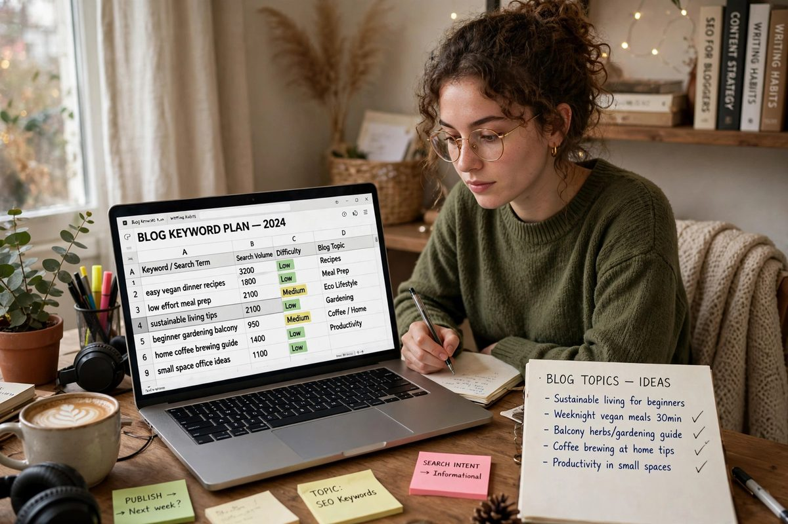

Home > Guides > How to Build a Keyword List for Your Blog
How to Build a Keyword List for Your Blog
A practical guide from Keyword Finder.

A keyword list is more than a collection of phrases. It is a plan for what you will write, in what order, and for whom. A good list covers your main topics, includes a mix of easy and hard keywords, and leaves no important question unanswered. A bad list is a random pile of phrases that leads to duplicate pages, missed topics and wasted effort. This guide shows how to build a keyword list for a blog, step by step, using free tools and your own knowledge of your readers. By the end you will have a list you can work from for months.
Start with your blog's main topics
Write down the five to ten main topics your blog covers, or should cover. For each topic, write down the questions readers ask, the problems they face, and the words they use. These topics are the pillars of your list. A blog that tries to cover everything will cover nothing well, so be honest about what your blog is really about. If a topic does not fit, leave it out. A focused list is easier to work from and builds authority faster than a scattered one.
Expand each topic with keyword research
For each main topic, use search suggestions, People Also Ask, forums and a free keyword tool to find related keywords, long-tail phrases and questions. Write down every idea, with its volume and intent if you can find them. Do not judge the ideas yet; a long list is good at this stage. Aim for twenty to fifty ideas per main topic. Look for keywords that are specific, that have some searches, and that you can write about well. A keyword that is popular but outside your knowledge is a poor choice for a blog built on trust.
Filter, group and prioritise the list
Now filter the list: remove keywords with no searches, keywords that are too competitive for your site, and keywords that do not fit your blog. Group the remaining keywords by topic and by intent, and map each group to a page: one main keyword per page, with supporting keywords grouped with it. Prioritise the list: start with easier keywords that bring quick wins, then move to harder ones. Mark the keywords you will write first, and note the order. A prioritised list tells you what to write next, so you never stare at a blank page wondering where to start.
Use the list and keep it alive
Work through the list steadily, one page at a time, and mark each keyword as done when the page is published. Track which pages get traffic and which do not, and update the list with new ideas from Search Console, from reader questions, and from new trends in your niche. Add new keywords every month, and remove the ones that no longer matter. A keyword list is a living document, not a one-time project. A list that is used and updated will guide your blog for a long time, while a list that is written once and forgotten will not help anyone.
Quick tips
- Start with five to ten main topics
- Aim for twenty to fifty ideas per topic
- One main keyword per page
- Work through the list steadily, one page at a time
Frequently asked questions
How many keywords should a blog list have?
Start with fifty to a hundred good keywords, grouped by topic. That is enough for months of writing. Add new ideas every month as you learn what works.
How do I prioritise keywords in my list?
Start with easier keywords you can win soon, then move to harder ones as your site grows. Prioritise keywords that fit your knowledge and your readers' needs.
Should I write for every keyword on my list?
No. Filter out keywords with no searches, too much competition, or a poor fit for your blog. A shorter list of good keywords beats a long list of poor ones.